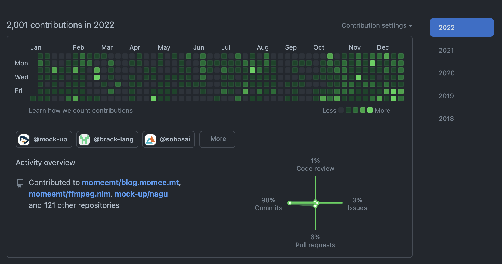
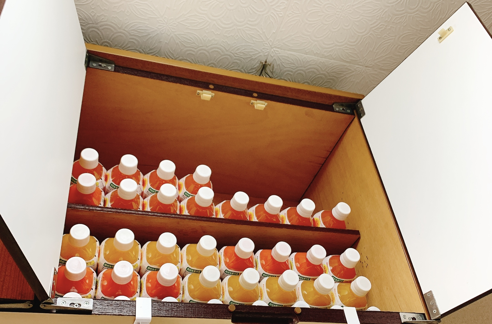

2022年
こんにちは、momeemtです。2022年をふりかえります。
2021年 ふりかえり
2020年 ふりかえり
総じて
- 大学生活はたのしくやっている
- かなり穏やかに過ごした
- 一人暮らしは慣れた。意外にも料理へのモチベーションは高い
料理はとても気晴らしになった。高音に熱した油がバチバチ跳ねるって何の地獄！？と思っていたけど秋は後述する最高の音楽に身を委ねながら唐揚げを作ったりできるようになった。家庭力が上がると将来の不安が一個減るのでよかった。
開発
- 長期インターン（1月〜9月）
- フィルターのパラメータを探索してある領域の顕著性を向上させる研究
- ffmpeg.nimをFFmpeg5系に対応させた（3月）
- Pixivインターン（9月）
- マークアップ言語とブログ（10月〜12月）
- 雙峰祭（9月〜12月）
- Cコンパイラ（11月〜12月）
- mock up
高校3年生の頃は大学生活始まったらとにかく生活を開発に投入するんだ、と意気込んでいたけれど大学を割とちゃんとやっていたらあまりそういう余裕もなかった。前期は特に1日に割り当てられた課題をすべてこなした時点でかなり満足してしまい、開発に脳をスイッチすることが難しかった。
入試を終えてから軽量マークアップ言語に興味を持ったので簡単な言語[1]を作って、9月くらいからこのブログの執筆言語に使っているBrackを書いたのでちょっとだけ解像度が上がった。12月にBrackのVSCodeシンタックスハイライトを書いてみたけどなんかところどころ壊れている[2]のでどうにかしたい。Language Server Protocolにも関心が出ている。
10月からは低レイヤを知りたい人のためのCコンパイラ作成入門を読んで実装を始め、ステップ15くらいまで進んでいる。B1の間には全部実装して、セルフホストを目指したいな...という目標がある。言語処理系には憧れを持っていたので、わかることが増えたのはよかったと思う。来年はタイガーブックの読破やCoPL、TaPLの読み進めをやってもう少し本格的なコンパイラの知識を得たいし、圏論の勉強の調子が割と良くて調子に乗ってベーシック圏論を買ってしまった。がんばりたい。言語処理系の研究室に進みたいかと言われるとそうではなくて、ソフトウェアのインターフェースをやりたいなあという気持ちは変わっていない。
技術的には去年とほぼ変わってなくて、Nimを中心に書いていた。ImageFluxのバックエンドはGoで書かれているので、Pixivのインターンで8日間くらいフルタイムで書いたけどほとんど経験がなかったのに使い心地良く開発ができたのでGoもありだなあとぼんやり思った[3]。
あと去年やらなかったことで言うと、Next.js、SATySFi[4]、GitHub Actions[5]、Docker[6]などは今年勉強したり書けるようになったりした。来年はUnity[7]、AfterEffects[8]、Blender[9]、k8s、Rust、Zig、Haskell、Nixを勉強したい[10]。
あと、応用情報を受けて受かったのと、データベーススペシャリストを受けて受験票を無くして合否がよくわからない、まあ多分落ちている、という感じ。資格自体には強い価値はそれほど感じていないので、きちんと勉強計画を立てて勉強しないと全く意味がないと応用情報の時に反省したけど行動には移されなかった。人間の反省なんてそんなもんだから。
OSSはやってみたいなあと思うことが多々あり、nim-lang/Nimにfix #21018 Nimpretty breaks with multi-line lambda proceduresという匿名関数が存在する際にNimprettyがインデントを無限に増やし続けるというバグを修正するPRを作成したがたくさんミスがあり、解決に至るような実装には至らなかった。ソースコードが巨大すぎて全く読み進められなかった...というか時間を割けなかったので来年はもう少し頻度良くコードリーディングをしてマージされることを目標に頑張りたいと思う。
執筆
秋に技術書典で『メタプログラミングNim』という本を同人出版した。結果的には大赤字だったのだけど[11]、売り子さんとの連絡や手続きであったり、ブースを作るためにはどうすれば良いのか、周りのベテランそうな方々は設営のために何を持ってきているのかなど、かなり多くの収穫を得たのでサークル参加してよかったなと思った。ところで在庫が大量に余っているし、私の名刺では未だに東京都立桜修館中等教育学校に所属しているようなので、なくなるまで名刺として配っていきたいと思う。押し付けられた方には申し訳ないがまあそういうことで。
執筆案件を夏くらいに2個抱えたのだけど締め切りがすぐなのに進捗が全くダメなので普通に困っています。缶詰旅行とか勝手にやっていい？[12]
友人
ラウンジで作業する友達がいるので楽しくやっている。
遊びに大学入学後いよいよ興味関心が無くなってしまい、高校時代は誘われたら行っていたが今はまったく遊びに行っていない。が、まあ開発が楽しいし周囲の人間もそういう人が多いので筑波に来てよかったなあと思う。
あとは最近jsysで喋ることが増えた。居心地も良くて嬉しい。
見た目
髪を染めた。髪を染めて髪をバッサバサにする人間は信じられないと思っていたし、そもそも外にロクに出ず大学同期と遊びに行くこともない[13]ので興味も全く無かったが、9月頭に急に思い立って染めた。彼女と上手くお付き合いが継続していて9月で3年だったので旅行に行ったのだけど、その直前にびっくりするかなと思って染めちゃった。人間わからないものですね。恋愛は人間を狂わせる。結果的には気に入っています。
なお服装には興味が出ず、高校同期に選んでもらったものを適当に着ている。
音楽
今年も様々な音楽を聴いた。35.7、Sundae May Club、anewhite、Predawn、フミンニッキ、帰りの会、チョーキューメイ、the pullovers、Conton Candy、クジラ夜の街、peanut butters、ポップしなないで、tiny yawn、ねぐせ、ネクライトーキー、などなど。
12月に聴いたブランデー戦記はかなり深くまで刺さり込み印象に残っている。
最近はきのこ帝国を聞いている[14]。お気に入りは国道スロープ。
お笑い
今年はM1を敗者復活から通しで見た。このペースだと来年以降は準々決勝の配信チケットを買ってしまう気がする。準決勝以降は当日の楽しみがなくなるからなるべく見ないようにしたいという気持ちがある。
決勝組だと当たり前にヨネダ2000が1番ハマったけど、さや香、ウエストランド、真空、カベポなど順当に面白くて困ったな〜〜[15]と思った。準決勝組だと令和ロマン、シンクロニシティ、ヤーレンズが刺さりって感じだった。ハイツが枚パーのネタやってたのが攻めすぎで永遠に笑ってた。
準々決勝組で今年見つけたのだと、たくろう、10億円、三遊間、にぼしいわし、軍艦、どんちっち、アイロンヘッド、エバース、ヘンダーソン、天才ピアニストあたりがめちゃくちゃ面白かった。特に3回戦のにぼしいわしがマジでマジで大好きで本当に呼吸が止まるかと思ったので貼っておく。来年以降の楽しみが増えちゃったな〜〜！
コントではダウ90000をずっと追っていた。来年こそはライブ行きたいなあ。
買ったもの
一人暮らしが始まり、生活のためにさまざまなものを買った[16]。
注文履歴曰く、95件の注文を行っている様。良い注文もあったでしょう。印象的なものをリストアップしてみる。
- ヘッドホン WH-1000XM4（2月）
- 蒟蒻畑（5月）
- 虫除け商品（5月）
- コーラアップ（6月〜）
- ルーター・LANケーブル（6月）
- 珪藻土マット付き食器かご（7月）
- 野菜ジュース（10月〜）
- デスクライト（11月）
- ゲーミングチェア（11月）
Bluetoothのヘッドホンは高校時代からずっと欲しいと思っており、1月から始めたインターンのお給料で買った。働いて得たお金で大きな買い物をするという初めての体験だったのでかなり強く印象に残っている。
食品にはそこそこ関心があり、中でも特定の食べ物を大量に食べることに憧れがあった[17]。あったので、蒟蒻畑やコーラアップ、野菜ジュースなどが定期的に私の中で流行っている[18]。
7月に買った珪藻土マットは革命的だった。もともとただでさえ狭い流しの半分を食器かごにしていたので洗い物が苦痛でしょうがなかったのだけど、珪藻土によって食器がシンク外に置かれるようになり広くなったのでかなり快適になった。
秋にはデスクライトやゲーミングチェアなどを買った。おかげで計算機に向かうハードルが下がり、2022年の後半期はコードを書く時間が増えた[19]。
研究
年明けは情報科学の達人で顕著生の研究をしていて、入学以降はAREに採択されたので継続して進めていた。ゼロから作るDL本を読んだり、強化学習や進化計算に関心のある友人と話すことで興味は強まったものの手はあまり動かないみたいな状態だった。動画編集ソフトウェアに直接的に関係がないのでコードを書きつつもそんなに惹かれないな...と思ったりしながら続けてしまったところがある。今思うと最初からIPLab（や、HCI）に興味を持っていたので顕著性の研究は一度区切りをつけてインターフェースの勉強をするべきだったなと思う[20]。
貴重な4年間ある大学生のうち、無為に1年を消費してしまった感覚もあって落ち込んだりすることが多いけど、振り返ると構文解析やパフォーマンスチューニングは今年身につけた知識で、組版や機械学習、数学へのモチベーションは友達から影響を受けているものだと思うので、進むスピードはめちゃくちゃ遅かったけどある程度得るものもあったような気もする。一口に動画編集関連の何かに携わりたいと言ってもCV、CG、インターフェース、チューニング、インターネットプロトコルなど複数の分野に跨っているので、何か1つの分野が尖っているよりは複数の分野を複合的に理解していることが理想だなとぼんやり思っている。なので、この1年間で（自分の研究配属されたい分野における）進捗がなかったことに対してはあまり責めないようにしたい。
スマホでよくある「二本指でピンチしてズーム」を現実世界でできるアプリを作りました！
— ritar (@rtr_dnd) July 15, 2020
MediaPipe+OpenCVでジェスチャーを認識して拡大できます、未来人類の目デフォルトでこれついててほしい#mediapipe #HandTracking pic.twitter.com/L2VYbQCaWD
ritarさんはインターフェース系の研究をされている大学院生で、この作品をきっかけに研究が始まっているようだった。
なんとなく考えているだけで実装をした動画編集ソフトがほとんどないから、春休みにいくつかプロトタイプを作ってみて、来年こそ上手くAREをやりたいなあ。
その他
ハッカソンに出た時にデザイン周りをやっていてIllustrator面白いな〜とか、いおりんと話して映像作りたいな〜とか思ったので来年はそういうことにも時間を使ってみたい。Adobe、使いこなせるまで行かなくても気分が乗った時に何か操作できると良いよねと思う。
音楽はかなり聴いた。ライブ行きたい。あとはダウ90000のライブも行きたい。そういう欲求も増えた、増えたけど特に行動が伴ったことはなかった。趣味がないと辛くて死ぬかもと不安だったけど、別に今年も相も変わらず何もできない一年だったのでそういうこともなかった。
気持ち環境については、まったくダメ...な時もあるし、呑気に過ごしている時もある。少なくとも衝動的に死にたくなることは減った気がする。
その他に置くのもなんだけど、大学はほどほどに頑張っていた。情報科学特別講義A、情報科学特別演習、論理システム、知識情報システム概説は面白かったなと思う。秋Cなのでまだだけど、オブジェクト指向プログラミングとシミュレーション物理にはかなり期待感がある。数学は難しいけど逃げずにがんばりたいな...
2023
来年の話は2023年 抱負に書くのでそっちで。
- Rapunzel。字句解析が上手くいかなくて放り投げた。
- なんかエディタが終わってるくらい重くなる時がある。先読み後読みの暴力は計算量に悪いのかも。
- ただCとのFFIについてはNimの方が優っているとも思った
- 完全にpuripuri2100への憧れ。なお、新歓委員長がうえかんであることから新歓パンフをこれで頑張ろうとするノリが生まれていてとても楽しい。CI難しい。SATySFiへの憧れは止まらない。
- ベスト使いこなせるようになりたい技術で賞
- こう、シェルの勉強をしたのが効いた気がする。あとはDevContainerに感動したのとかも。
- 目標がmock upに似ている気がするから。ゲーム開発には興味がないけど巨大ソフトウェアには興味があって...
- いおりんやDolceとたくさん話す機会があるうちにやる気を出したい
- 憧れ
- 自由気ままに勉強できるのも3年前期くらいまでだと思うので
- あまり攻めすぎたテーマにしない方がいいよ
- すぐ調子に乗る
- ラウンジでCMAESや強化学習やコンパイラやビット演算に気持ちのあるオタクにおのおの布教を受けて、俺もコンパイル時にガチャガチャ操作したい人間にNimっていう言語があってね？と言うような人間関係はある
- 白状しておくと最初はセンス良くありたいみたいな煩悩から聞くようになった気がする...けど、今は膨大な楽曲を一旦全部聴きたいという割と純粋な気持ち（？）に動かされている
- 実は、困らない。嬉しいだけ。
- Amazonがなくなったら生活が破綻する
- 実家ではそういう不健康なことをはしづらいので。ところで中学2年生の頃にマクドナルドのハンバーガーを大量に食べたことがあったが、直後に肺炎になった。直接関係があるかどうかは知らないが、今もそういう行為の後には嘔吐や頭痛が付き纏っているのでやめた方がいい
- グミや蒟蒻畑はカロリーが低いのか糖分が少ないのかであまり体重に変化がなかったのだが、野菜ジュースを飲み始めてから明らかに体重の増加が見られるので減らしたほうがいいなとは思っている。
- 大学の授業へのやる気が落ちた、寒いので外に出れずラウンジにあまり行かなかったなども要因の1つだと思う
- 元々ARE自体がもっと厳かで履修者はどんどんと成果を出し続けるような雰囲気を想像していた。実際、国際学会にacceptされるようなすごい先輩もいたわけだが、全員がそうではなく授業名の通り研究体験に近いものだったから、怯えずにIPLabにメールを送るべきだった。でも知らない教授にメールを送るって、怖いんだよね...